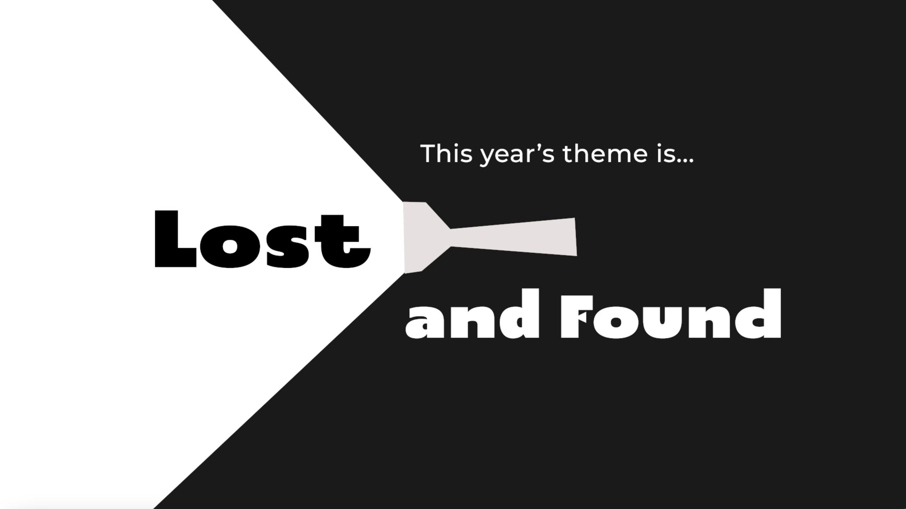

游戏展示视频
这是一款剧情向横版跳跃2D游戏。主题：游戏剧情设计上包含了对于某些事情的讽刺，并传递出一个信号：生命中看似是lost的事情的背后可能found意外之喜，所谓祸兮福之所倚。
主人公独白：“我是2049，一个新时代的工作机器人，我的所有的部件都是被别人规定好的样子，每天的计划就是不停的工作…但有一天，我不想再这样下去了，于是我跑啊跑…为了跑得更快我失去了背了很久的不知道是什么的铁块，甚至失去了我的腿，但是我发现…”

上图为2021 Global Game Jam 48小时极限游戏开发主题
上图为2021 Global Game Jam 48小时极限游戏开发主题
根据题目 Lost and Found, 我和我的团队认为应当以“在丢失中获得”为基础构建游戏。
受游戏 Gris 启发，我决定让游戏主角在冒险过程中，每丢失一次已经拥有的东西，就像Gris一样获得一种能力，最终找到自己真正想要的东西。
在开发游戏时，网络上正逢“打工人”的热点。于是，我便思考“打工人”是否能和“得与失”结合起来。最终决定将游戏主角设定为在未来工厂中想要逃离无止尽工作的机器人2049。 以机器人在冒险路上丢失零部件却意外获得新能力的形式，让玩家获得“得与失”的游戏体验。比如，机器人2049号被大石头绊倒，摔断腿部组件后，身体内的弹簧冒了出来，他也因此获得了跳跃的能力。